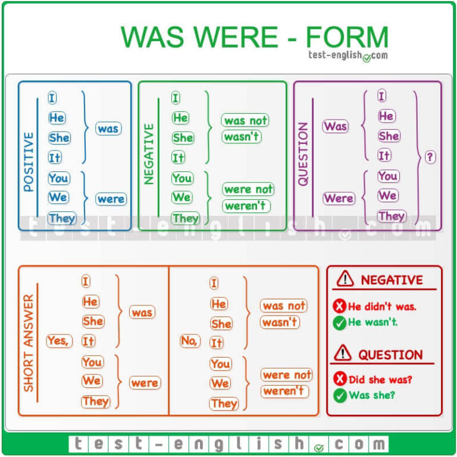

📘 Was / Were nədir?
Was və Were, to be felinin Past Simple (Keçmiş Zaman) formalarıdır.
Was
I, He, She, It
Were
You, We, They
📌 Formula
Positive
Subject + was / were + Complement
Negative
Subject + wasn't / weren't + Complement
Question
Was / Were + Subject + Complement ?
📋 Was / Were Cədvəli
| Subject | To Be |
|---|---|
| I | was |
| He | was |
| She | was |
| It | was |
| You | were |
| We | were |
| They | were |
✅ Müsbət Cümlələr
- I was at home yesterday.
- She was excited.
- He was busy.
- We were tired.
- They were happy.
❌ Mənfi Cümlələr
- I wasn't tired.
- She wasn't at school.
- He wasn't hungry.
- We weren't busy.
- They weren't at home.
❓ Sual Cümlələri
- Was she happy?
- Was he at school?
- Were they busy?
- Were you at home?
💬 Qısa Cavablar
| Sual | Cavab |
|---|---|
| Was she happy? | Yes, she was. |
| Was he busy? | No, he wasn't. |
| Were they tired? | Yes, they were. |
| Were you at home? | No, I wasn't. |
⏰ Zaman İfadələri (Time Expressions)
Past Simple zamanı ilə birlikdə aşağıdakı zaman ifadələri tez-tez işlənir.
📖 Was / Were istifadəsi
Was / Were keçmişdə baş vermiş vəziyyətləri, hissləri, yerləri və insanların vəziyyətini ifadə etmək üçün istifadə olunur.
✔ I was happy yesterday.
✔ She was at home.
✔ We were students.
✔ They were tired.
👶 Was / Were Born
Be born ifadəsi həmişə was born / were born şəklində işlənir.
⚠ Ən Çox Edilən Səhvlər
| Səhv | Düzgün |
|---|---|
| He didn't was happy. | He wasn't happy. |
| Did she was at home? | Was she at home? |
| They was tired. | They were tired. |
| I were late. | I was late. |
💡 Yadda Saxla
- I / He / She / It → was
- You / We / They → were
- was not → wasn't
- were not → weren't
- Sual cümləsində Was / Were əvvəl gəlir.
📝 Mini Test
- I ______ happy yesterday.
- They ______ at school.
- ______ she at home?
- We ______ tired.
- He ______ born in 2010.
✅ Cavablar
- was
- were
- Was
- were
- was